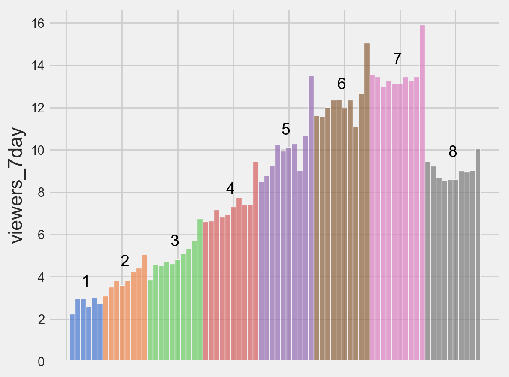
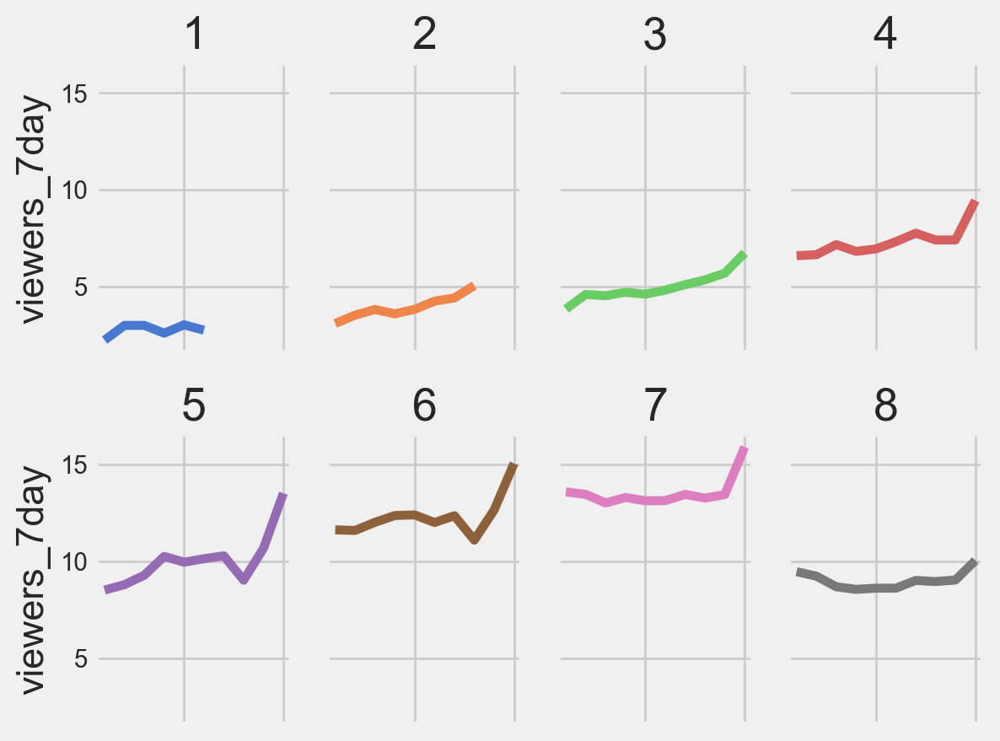
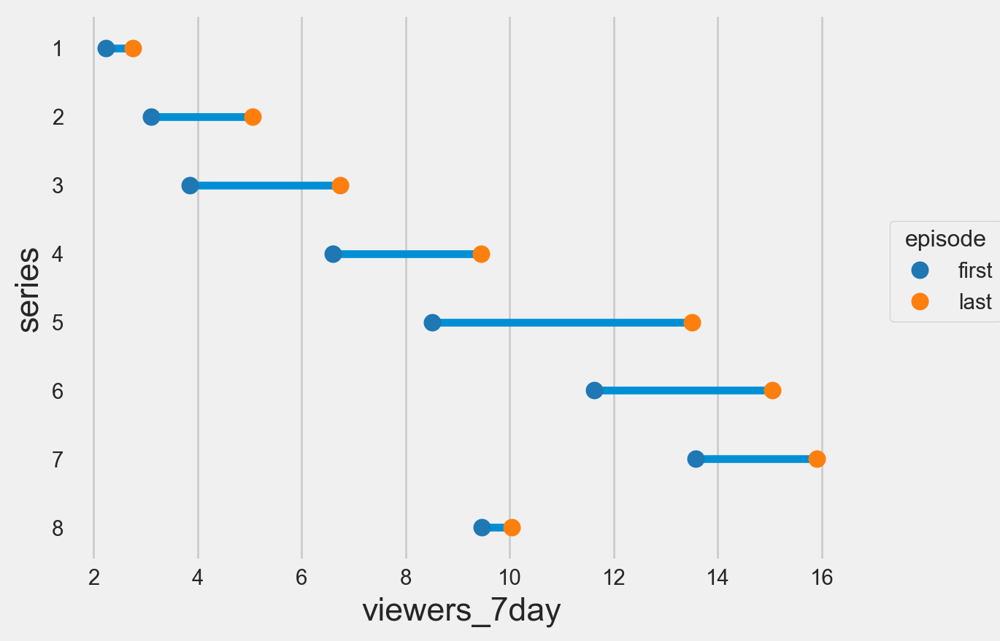
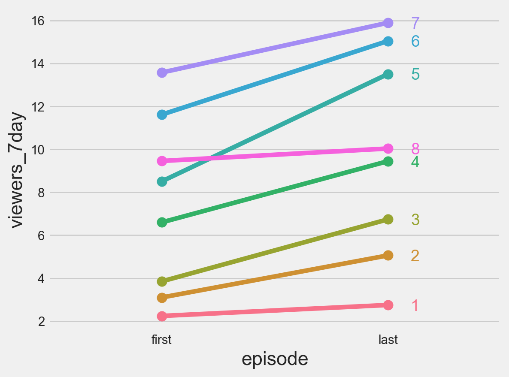
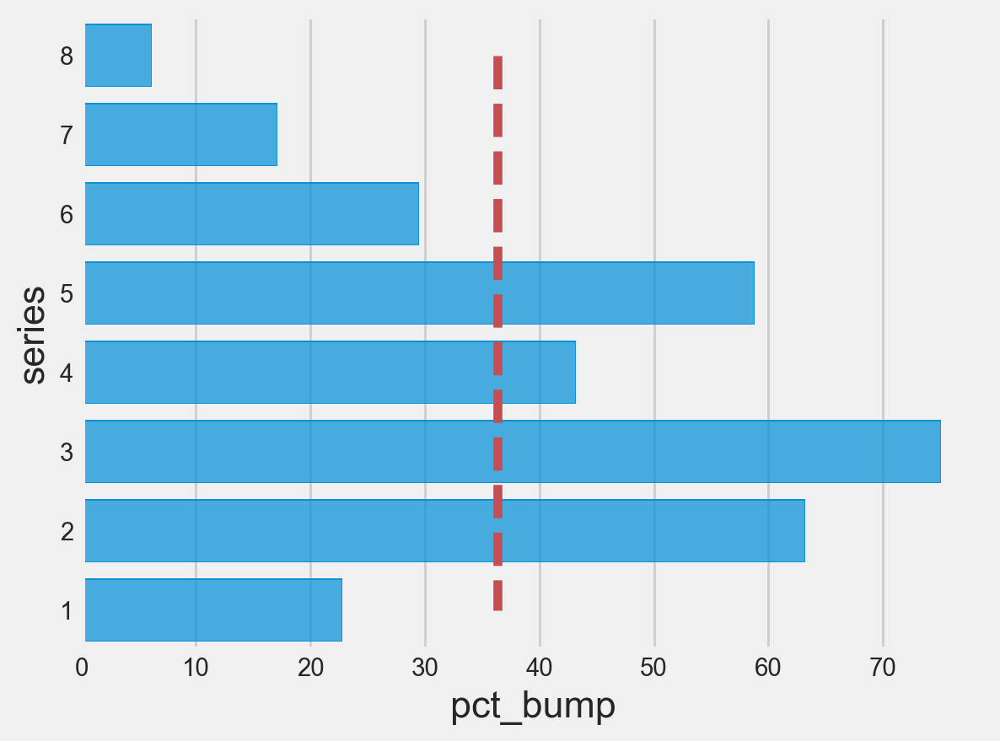
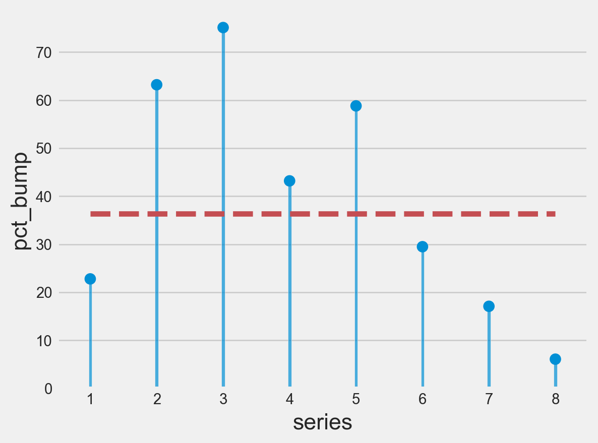
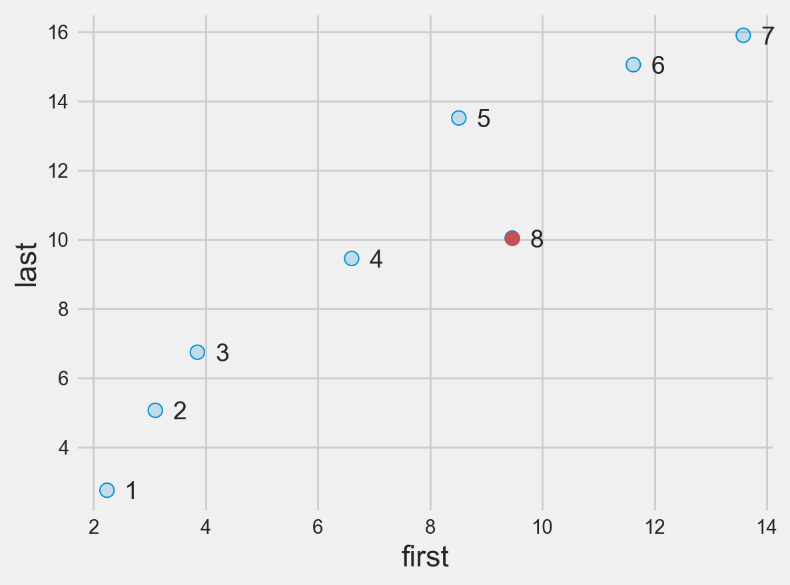

Great British Bakeoff
TidyTuesday
Visualising the Great British Bakeoff with #TidyTuesday | source.
We follow the examples given in Data Visualization in the Tidyverse - The Great Tidy Plot Off by Alison Hill.
Dependencies
Cache and load the data
ratings_df = pd.read_csv(lrdataio.cache_url('https://raw.githubusercontent.com/rfordatascience/tidytuesday/master/data/2022/2022-10-25/ratings.csv')) # noqa
ratings_df.info()<class 'pandas.core.frame.DataFrame'>
RangeIndex: 94 entries, 0 to 93
Data columns (total 11 columns):
# Column Non-Null Count Dtype
--- ------ -------------- -----
0 series 94 non-null int64
1 episode 94 non-null int64
2 uk_airdate 94 non-null object
3 viewers_7day 94 non-null float64
4 viewers_28day 93 non-null float64
5 network_rank 70 non-null float64
6 channels_rank 50 non-null float64
7 bbc_iplayer_requests 20 non-null float64
8 episode_count 94 non-null int64
9 us_season 50 non-null float64
10 us_airdate 45 non-null object
dtypes: float64(6), int64(3), object(2)
memory usage: 8.2+ KBHow has the viewership changed?
series8_decline
Continuous bar chart
Show the code
def _plot_cts_bar_chart(df: pd.DataFrame) -> None:
series_text = (
pd.DataFrame()
.assign(
episode_count=df.groupby('series')['episode_count'].mean(),
viewers_7day=df.groupby('series')['viewers_7day'].median()
)
.reset_index()
)
return (
so.Plot(df,
x='episode_count',
y='viewers_7day',
color='series',
text='series')
.add(so.Bars(), legend=False)
.add(so.Text(color='black',
valign='bottom',
offset=10),
data=series_text)
.scale(x=so.Continuous().label(like=lambda _, __: ''), color='muted')
.label(x='')
.theme({**style.library["fivethirtyeight"]})
)
series8_decline.pipe(_plot_cts_bar_chart)
Faceted line chart
Show the code
def _plot_faceted_line_chart(df: pd.DataFrame) -> None:
return (
so.Plot(df,
x='episode',
y='viewers_7day',
color='series')
.add(so.Line(), legend=False)
.scale(x=so.Continuous().label(like=lambda _, __: ''),
color='muted')
.facet(col='series', wrap=4)
.label(x='')
.theme({**style.library["fivethirtyeight"]})
)
series8_decline.pipe(_plot_faceted_line_chart)
Premieres vs. Finales
first_last
first = ratings_df.query('episode == 1 and (1 <= series <= 8)')
last = (
ratings_df
.query('1 <= series <= 8')
.sort_values(by=['episode', 'series'],
ascending=[False, True])
.drop_duplicates('series')
)
first_last = (
pd.concat([first, last])
.assign(episode=lambda x: x['episode'].apply(
lambda s: ('first' if s == 1 else 'last')),
series=lambda x: x['series'].astype(str))
)finale_pct_bump
Dumbbell plot
Show the code
def _plot_dumbbell(df) -> so.Plot:
return (
so.Plot(df,
x='viewers_7day',
y='series',
group='series',
text='series')
.add(so.Line(), legend=None)
.add(so.Line(linewidth=0, marker='o', pointsize=8),
color='episode',
data=df)
.scale(color='tab10')
.theme({**style.library["fivethirtyeight"]})
)
first_last.pipe(_plot_dumbbell)
Slope graph
Show the code
def _plot_slope(df) -> so.Plot:
return (
so.Plot(df,
x='episode',
y='viewers_7day',
color='series',
text='series')
.add(so.Line(marker='o',
pointsize=8),
legend=None)
.add(so.Text(halign="left",
offset=20),
data=df.query('episode == "last"'))
.theme({**style.library["fivethirtyeight"]})
)
first_last.pipe(_plot_slope)
Bar chart with median line
Show the code
def _plot_bar_hax_line(df) -> so.Plot:
med_line = df.assign(pct_bump=[df['pct_bump'].median()] * 8)
return (
so.Plot(df, x='pct_bump', y='series')
.add(so.Bar(),
orient='h')
.add(so.Line(color='r',
linestyle='dashed'),
data=med_line,
orient='h')
.theme({**style.library["fivethirtyeight"]})
)
finale_pct_bump.pipe(_plot_bar_hax_line)
Lollipop chart with median line
Show the code
def _plot_lollipop_hax_line(df) -> so.Plot:
df = df.sort_index()
med_line = df.assign(pct_bump=[df['pct_bump'].median()] * 8)
return (
so.Plot(df,
x='series',
y='pct_bump')
.add(so.Bars(width=0.05))
.add(so.Dot(pointsize=8))
.add(so.Line(color='r',
linestyle='dashed'),
data=med_line)
.theme({**style.library["fivethirtyeight"]})
)
finale_pct_bump.pipe(_plot_lollipop_hax_line)
Pop-Out Scatterplot
Show the code
def _plot_scatter_pop_out(df) -> so.Plot:
df = (
df
.pivot(index='series',
columns='episode',
values='viewers_7day')
.reset_index()
)
return (
so.Plot(df,
x='first',
y='last',
text='series')
.add(so.Dots(pointsize=8))
.add(so.Dot(pointsize=8, color='r'),
data=df.query('series == "8"'))
.add(so.Text(halign='left',
offset=10))
.theme({**style.library["fivethirtyeight"]})
)
first_last.pipe(_plot_scatter_pop_out)